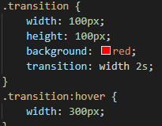

What are CSS Animations?
A CSS animation allows a HTML element change from one style to the other. To use the CSS animation, you must create and specify keyframes for it to work. Keyframes hold the styles that the HTML element will use.
Below is an example of an animation:
Below is an the code used to create this animation:

As seen above, I have used a class selector to create the dimensions of the square which is animated by using the width and height tags, made the default colour red, named it example and made the animation last for a total of 4 seconds. With keyframes is where you create the animation and allow it to do what it does with. At 0%, it doesn't move and is still red, at 25%, it moves right by 200 pixels and turns yellow, at 50%, it moves down by 200 pixels and turns blue, at 75%, it moves 200 pixels left and turns green, and at 100%, it moves back to its original position and turns red again.
What are CSS Transitions?
CSS Transitions allow developers to change the attributes or the values of attributes such as width fluently and smoothly over a duration. Below is an example of a transition:
Hover over the red square to see the transition.
Below is the code used to create this transition:
